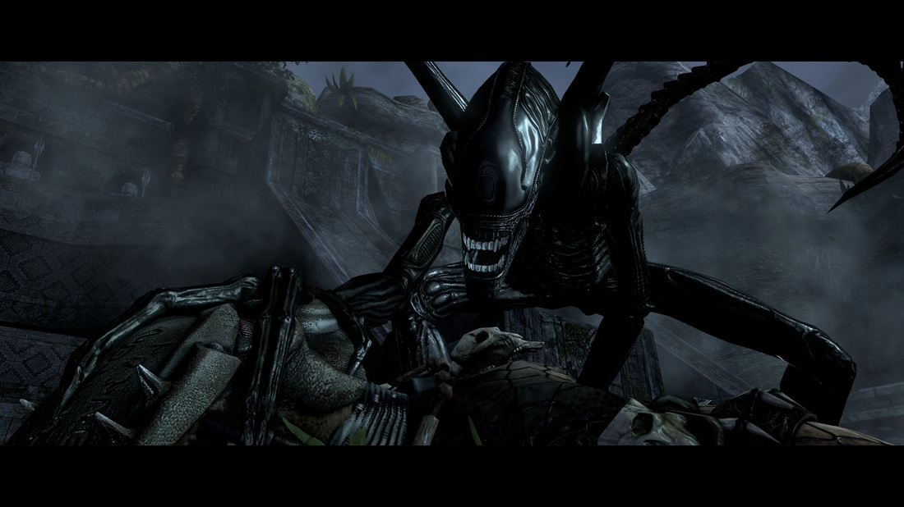
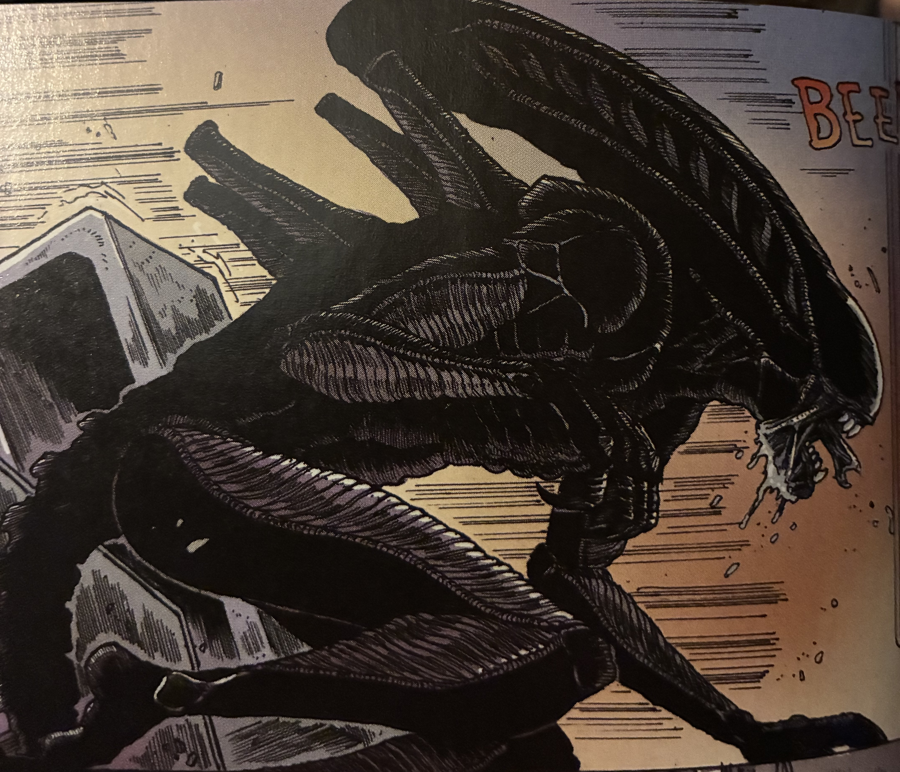

Xenomorph Drone

The most common Xenomorph is the Drone or the worker.
Although they are the most common, it's what Big Chap is and he was most certainly scary.
Big Chap is the very reason why I love Alien so much. His design was so new to me, and frightening to me that I loved it.
The biomechanical design by H.R. Giger was so unique and it hit an itch I didn't even know that was there.
I love how you can essentially see everything such as ribs, muscles, fingers, etc.

(Comic: Alien: Dead Orbit)
I also really love the smooth dome of the Xenomorph, and the (wait for it) alien look to it (knee-slapper over here, sorry people...).
And because of that, they are easily hidden in their enviroments especially in ones where there several pipes and wires.
Home Page | Big Chap | Warrior | Best Xenomorph | Xenomorph Runner